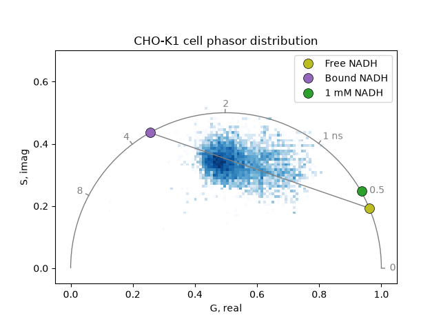
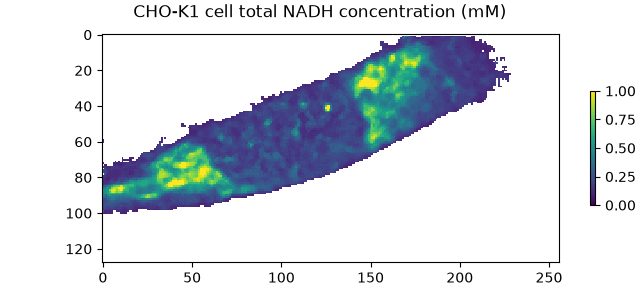
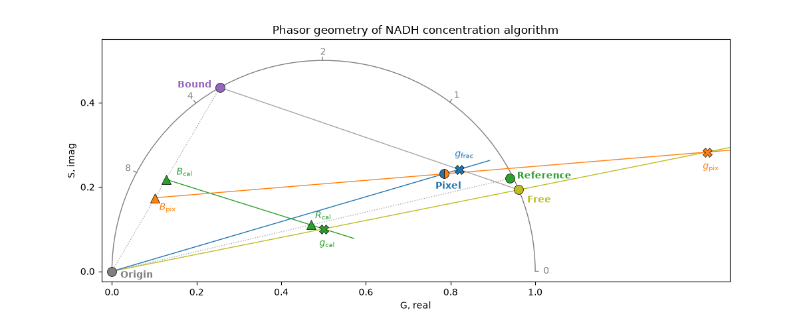

Absolute NADH concentration#
Determine absolute NADH concentration using intensity-calibrated phasor FLIM.
NADH (nicotinamide adenine dinucleotide) is an endogenous fluorophore present in cells in two forms, distinguishable by fluorescence lifetime: a short-lived free form (cytoplasmic NADH, lifetime ~0.4 ns) and a long-lived enzyme-bound form (lifetime ~3.4 ns).
The phasor_component_concentration() function
determines absolute free (and optionally bound) NADH concentrations per pixel
from two pieces of information: the phasor coordinate, which encodes the
free-to-bound ratio, and the mean fluorescence intensity, which is scaled to
absolute concentration using a calibration solution of known concentration.
This tutorial demonstrates the method based on:
Ma N, Digman MA, Malacrida L, and Gratton E. Measurements of absolute concentrations of NADH in cells using the phasor FLIM method. Biomed Opt Express, 7(7): 2441-2452 (2016)
Import required modules, functions, and classes:
import math
from phasorpy.component import phasor_component_concentration
from phasorpy.datasets import fetch
from phasorpy.filter import phasor_filter_median, phasor_threshold
from phasorpy.io import phasor_from_simfcs_referenced
from phasorpy.lifetime import phasor_from_lifetime
from phasorpy.phasor import phasor_center
from phasorpy.plot import PhasorPlot, plot_image
CHO-K1 cell#
Determine the absolute NADH concentration in each pixel of a CHO-K1 cell FLIM dataset measured at 80 MHz, using a 1 mM NADH solution (acquired with the same instrument settings) as the calibration standard.
Read the CHO-K1 cell phasor coordinate images from a SimFCS referenced file. Apply a median filter to reduce noise and threshold to retain only pixels with sufficient signal:
filename = fetch('NADH_cell.r64')
cell_mean, cell_real, cell_imag = phasor_threshold(
*phasor_filter_median(
*phasor_from_simfcs_referenced(filename)[:3],
repeat=4,
),
mean_min=0.5,
)
Read the NADH reference/calibration phasor images. The center of the phasor distribution gives the fluorescence-only mean intensity and the unshifted reference phasor.
filename = fetch('NADH_1mM.r64')
reference_mean, reference_real, reference_imag = (
float(v)
for v in phasor_center(
*phasor_threshold(
*phasor_from_simfcs_referenced(filename)[:3],
mean_min=1.0,
)
)
)
reference_concentration = 1.0 # 1 mM NADH standard
Calculate the phasor coordinates of free and enzyme-bound NADH at 80 MHz from their known single-exponential fluorescence lifetimes:
frequency = 80.0 # MHz
free_lifetime = 0.4 # ns, free cytoplasmic NADH
bound_lifetime = 3.4 # ns, enzyme-bound NADH
free_real, free_imag = (
float(v) for v in phasor_from_lifetime(frequency, free_lifetime)
)
bound_real, bound_imag = (
float(v) for v in phasor_from_lifetime(frequency, bound_lifetime)
)
Plot the phasor distribution of the cell and the reference phasor coordinates. Pixels cluster along the free-bound NADH line:
phasor_plot = PhasorPlot(
frequency=frequency,
title='CHO-K1 cell phasor distribution',
)
phasor_plot.hist2d(cell_real, cell_imag)
phasor_plot.line([free_real, bound_real], [free_imag, bound_imag], ls='-')
for label, (rx, ix, col) in {
'Free NADH': (free_real, free_imag, 'tab:olive'),
'Bound NADH': (bound_real, bound_imag, 'tab:purple'),
'1 mM NADH': (reference_real, reference_imag, 'tab:green'),
}.items():
phasor_plot.plot(
rx,
ix,
color=col,
markersize=10,
markeredgecolor='black',
markeredgewidth=0.5,
label=label,
)
phasor_plot.show()

Compute the free, bound, and total NADH concentrations for each cell pixel. The brightness ratio (molecular brightness of bound relative to free NADH) is set to 1.0 to reproduce the results of Ma et al, who did not apply a brightness correction. This is known to be incorrect: bound NADH has a ~3-5x higher quantum yield than free NADH, so accurate total concentrations require a measured brightness ratio:
conc_free, conc_bound = phasor_component_concentration(
cell_mean,
cell_real,
cell_imag,
[free_real, bound_real],
[free_imag, bound_imag],
reference_mean,
reference_real,
reference_imag,
reference_concentration,
brightness_ratio=1.0,
)
conc_total = conc_free + conc_bound
Display the total NADH concentration image. Pixels below the intensity threshold are NaN. The total NADH concentration can be directly compared to the published results (Fig. 7b of Ma et al), which show a matching concentration range and spatial distribution:
plot_image(
conc_total[:128], # only show the cell region
vmin=0.0,
vmax=1.0,
title='CHO-K1 cell total NADH concentration (mM)',
)

Algorithm#
The geometric algorithm for computing the concentrations of two components
from phasor coordinates is documented in detail in
phasor_component_concentration() and works by
intersecting lines in phasor space.
The phasor diagram below shows all coordinates and lines involved in the algorithm:
# Constants
frequency = 80.0 # MHz
free_lifetime = 0.4 # ns, free NADH
bound_lifetime = 3.4 # ns, bound NADH
ref_real = 0.94 # reference phasor
ref_imag = 0.22
ref_mean = 3000.0 # approximate fluorescence-only reference mean
pix_mean = 4000.0 # example pixel intensity
bound_frac = 0.30 # example pixel: ~30 % bound fraction
# Phasor coordinates of free and bound NADH from lifetimes
free_real, free_imag = (
float(v) for v in phasor_from_lifetime(frequency, free_lifetime)
)
bound_real, bound_imag = (
float(v) for v in phasor_from_lifetime(frequency, bound_lifetime)
)
# Example cell pixel slightly off the free-bound line.
# Real pixels scatter around the F-B line due to noise and other components.
# The offset is chosen so that g_pix stays within the diagram.
pix_real = free_real * (1 - bound_frac) + bound_real * bound_frac + 0.035
pix_imag = free_imag * (1 - bound_frac) + bound_imag * bound_frac - 0.035
# Bound and reference phasors scaled to m = 0.5
# (calibration condition I == I_ref)
b_cal_real = bound_real * 0.5
b_cal_imag = bound_imag * 0.5
r_cal_real = ref_real * 0.5
r_cal_imag = ref_imag * 0.5
# Bound phasor scaled to pixel intensity
m_pix = pix_mean / (2.0 * ref_mean + pix_mean)
b_pix_real = bound_real * m_pix
b_pix_imag = bound_imag * m_pix
def intersect(x0, y0, x1, y1, x2, y2, x3, y3):
# return intersection of line (x0,y0)-(x1,y1) and (x2,y2)-(x3,y3)
det = (x0 - x1) * (y2 - y3) - (y0 - y1) * (x2 - x3)
if det == 0:
return math.nan, math.nan
a = x0 * y1 - y0 * x1
b = x2 * y3 - y2 * x3
return [
(a * (x2 - x3) - (x0 - x1) * b) / det,
(a * (y2 - y3) - (y0 - y1) * b) / det,
]
def extend(x1, y1, x2, y2, oh=0.075):
# return start exact, end extended by oh past the intersection point
d = math.hypot(x2 - x1, y2 - y1)
ux, uy = (x2 - x1) / d, (y2 - y1) / d
return x1, y1, x2 + oh * ux, y2 + oh * uy
# g_cal: line(free -> origin) X line(b_cal -> r_cal)
g_cal, s_cal = intersect(
free_real,
free_imag,
0.0,
0.0,
b_cal_real,
b_cal_imag,
r_cal_real,
r_cal_imag,
)
# g_pix: line(free -> origin) X line(b_pix -> pixel)
g_pix, s_pix = intersect(
free_real,
free_imag,
0.0,
0.0,
b_pix_real,
b_pix_imag,
pix_real,
pix_imag,
)
# g_frac: line(free -> bound) X line(origin -> pixel)
g_frac, s_frac = intersect(
free_real,
free_imag,
bound_real,
bound_imag,
0.0,
0.0,
pix_real,
pix_imag,
)
phasor_plot = PhasorPlot(
figsize=(12.2, 4.8),
frequency=frequency,
xlim=(-0.025, 1.46),
ylim=(-0.025, 0.55),
grid={'lifetime': [0, 1, 2, 4, 8]},
title='Phasor geometry of NADH concentration algorithm',
)
# Origin -> Reference
phasor_plot.line(
[0.0, ref_real],
[0.0, ref_imag],
color='tab:gray',
linestyle=':',
alpha=0.7,
)
# Free -> Bound
phasor_plot.line(
[free_real, bound_real],
[free_imag, bound_imag],
color='tab:gray',
linestyle='-',
alpha=0.7,
)
# Origin -> Bound
phasor_plot.line(
[0.0, bound_real],
[0.0, bound_imag],
color='tab:gray',
linestyle=':',
alpha=0.7,
)
# Origin -> Free
x0, y0, x1, y1 = extend(0.0, 0.0, g_pix, s_pix)
phasor_plot.line(
[x0, x1],
[y0, y1],
color='tab:olive',
linestyle='-',
)
# Origin -> g_frac
x0, y0, x1, y1 = extend(0.0, 0.0, g_frac, s_frac)
phasor_plot.line(
[x0, x1],
[y0, y1],
color='tab:blue',
linestyle='-',
)
# B_cal -> g_cal
x0, y0, x1, y1 = extend(b_cal_real, b_cal_imag, g_cal, s_cal)
phasor_plot.line(
[x0, x1],
[y0, y1],
color='tab:green',
linestyle='-',
)
# B_pix -> g_pix
x0, y0, x1, y1 = extend(b_pix_real, b_pix_imag, g_pix, s_pix)
phasor_plot.line(
[x0, x1],
[y0, y1],
color='tab:orange',
linestyle='-',
)
# Phasor coordinates
for label, (rx, ix, col, mk, (dx, dy)) in {
'Pixel': (pix_real, pix_imag, 'tab:blue', 'o', (-0.02, -0.035)),
'Free': (free_real, free_imag, 'tab:olive', 'o', (0.02, -0.03)),
'Bound': (bound_real, bound_imag, 'tab:purple', 'o', (-0.1, 0.0)),
'Reference': (ref_real, ref_imag, 'tab:green', 'o', (0.017, 0.0)),
'Origin': (0.0, 0.0, 'tab:gray', 'o', (0.02, -0.015)),
'$R_\\mathrm{cal}$': (
r_cal_real,
r_cal_imag,
'tab:green',
'^',
(0.01, 0.015),
),
'$B_\\mathrm{cal}$': (
b_cal_real,
b_cal_imag,
'tab:green',
'^',
(0.025, 0.01),
),
'$B_\\mathrm{pix}$': (
b_pix_real,
b_pix_imag,
'tab:orange',
'^',
(0.01, -0.03),
),
'$g_\\mathrm{cal}$': (g_cal, s_cal, 'tab:green', 'X', (-0.01, -0.04)),
'$g_\\mathrm{pix}$': (g_pix, s_pix, 'tab:orange', 'X', (-0.01, -0.04)),
'$g_\\mathrm{frac}$': (g_frac, s_frac, 'tab:blue', 'X', (-0.01, 0.03)),
}.items():
phasor_plot.plot(
rx,
ix,
marker=mk,
fillstyle='left' if label == 'Pixel' else None,
markerfacecolor=col,
markerfacecoloralt='tab:orange' if label == 'Pixel' else col,
markersize=10,
markeredgecolor='black',
markeredgewidth=0.5,
)
phasor_plot.ax.annotate(
label,
xy=(rx, ix),
xytext=(rx + dx, ix + dy),
fontsize=10,
fontweight='bold',
color=col,
)
phasor_plot.show()

The steps below correspond to the labelled points in the phasor diagram, using the free phasor \(F\), bound phasor \(B\), reference phasor \(R\) (center of the calibration distribution), per-pixel phasor \(P\), and the origin \(O\):
1. Calibration factor: Scale bound and reference phasors by fixed intensity modulation \(m = 0.5\) to obtain \(B_\text{cal} = 0.5 \cdot B\) and \(R_\text{cal} = 0.5 \cdot R\). Find \(g_\text{cal}\), the intersection of the \(F\)-\(O\) line with the \(B_\text{cal}\)-\(R_\text{cal}\) line. The calibration factor is \(k = c_\text{ref} \cdot (g_\text{free} - g_\text{cal}) / g_\text{cal}\), where \(g_\text{free}\) is the real/G component of the free phasor.
2. Per-pixel intensity modulation: For each pixel with mean intensity \(I\), compute \(m = I / (2 I_R + I)\) where \(I_R\) is the reference mean. Scale the bound phasor: \(B_\text{pix} = m \cdot B\).
3. Free concentration: Find \(g_\text{pix}\), the intersection of the \(F\)-\(O\) line with the \(B_\text{pix}\)-\(P\) line. Then \(c_\text{free} = |g_\text{pix} \cdot k / (g_\text{free} - g_\text{pix})|\).
4. Bound and total concentration (when brightness ratio is provided): Find \(g_\text{frac}\), the intersection of the \(F\)-\(B\) line with the \(O\)-\(P\) line. \(g_\text{frac}\) determines the free fraction \(f_\text{free}\), from which \(c_\text{bound}\) and \(c_\text{total}\) follow.
Note that the diagram labels \(g_\text{cal}\), \(g_\text{pix}\), and \(g_\text{frac}\) as intersection points, but only the real/G component is used in the calculations.
Total running time of the script: (0 minutes 1.272 seconds)